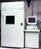
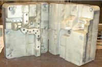
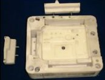

Not: Þemadaki baþlýklarý týklayarak, direkt açýklama sayfalarýný görebilirsiniz.
Bu teknikte, noktasal bir
ýþýk kaynaðý ile seçilen bölgeler taranarak kür edilir.
Noktasal ýþýk elde etmek için, çoðunlukla, aynalar ile
yönlendirilen bir lazer kaynaðý kullanýlýr.
Yalnýz, camdan yapýlmýþ,
(suyun hortumdan akýþý gibi içinden ýþýðýn geçtiði) esnek
ve ince fiber-optik kablo(lar) ile lazer ýþýðýný yönlendirilen
sistemler de vardýr (Meiko). Fiber-optik
kablo kullanan bazý cihazlarda ise ýþýk kaynaðý
olarak, pahalý lazer sistemleri yerine, bir mercek ile
toplanmýþ (kýzýlötesi) ampul ýþýðý kullanýlýr (Unirapid).
Aþaðýda sýralanan cihaz
ve teknolojilerin hepsinde inþa malzemesi olarak kullanýlan
ham (kür olmamýþ) fotopolimer oda sýcaklýðýnda sývý haldedir
fakat istisna olarak katý fotopolimer kullanan bir cihaz
da vardýr (Denken/SolidJet). OptoForm
firmasý ise macun kývamýnda fotopolimer reçine kullanýmý
konusunda araþtýrmalar yapmaktadýr.
Stereolithography
(stereolitografi), adýndan da anlaþýlacaðý üzere matbaacýlýkta
yýllardan beri iki boyutlu baskýlar için kullanýlan litografi
tekniðinin üç boyuta "stereo" aktarýlmýþ þeklidir. Her
ne kadar bu isim öncelikle 3D Systems firmasý tarafýndan
kullanýlsa da, tescil ettirdiði bir markasý olmadýðý için
rakip firmalar da kendi teknolojilerini ayný isimle adlandýrmýþlardýr.
Bu teknikte, bir lazer
kaynaðýndan elde edilen ýþýk enerjisi ile sývý halde
bir kapta birikmiþ olan fotopolimer
yüzeyinin taranmasýyla gerekli kýsýmlar kür edilerek
sertleþtirilir. Bir katman bittikten sonra parçanýn
bulunduðu platform (elevator) katman kalýnlýðý kadar
aþaðý indirilir ve bir kanat yardýmýyla yeni bir kat
sývý fotopolimer kaplanýr. Ýnþa bittikten sonra platform
yukarý çekilir ve manuel olarak destek sütunlarý kopartýlýr. Çoðunlukla
ulaþýlan ilk kür derecesi yeterli olmadýðýndan parça
bir süre daha özel bir fýrýnda UV (morötesi) lamba ýþýðý
altýnda bekletilerek kür reaksiyonunun tamamlanmasý
saðlanýr. Bu teknik Ýngilizce'de "postcuring" olarak
adlandýrýlýr.
Aþaðýda, bu stereolitografi tekniðine ait bir animasyon görülmektedir.
Kaynak: Rapid Product Solutions, 1998
Sývý fotopolimeri ýþýkla
tarayarak kür teknolojisini kullanan birçok firma küçük
farklarla ayný prensibi kullanýr. Yalnýz Denken Eng./SLP
ve Autostrade/ E-DARTS cihazlarý,
bu yöntemin tersi bir yolla, parçayý alt tarafýndan
inþa ederler.
1986 yýlýnda Charles
Hull tarafýndan kurulan 3D Systems firmasý otoinþa teknolojisi
sahasýnda dünyadaki ilk ticari ürünü çýkaran firmadýr
(1988). Günümüzde de yaptýðý satýþ itibariyle bu sektörün
yarýsýna yakýnýný elinde tutmaktadýr. Daha sonralarý benzer
teknolojiyi kullanarak üretim yapan birçok firma türemiþtir...
Solda, Charles Hull
tarafýndan konuyla ilgili alýnmýþ ilk patente ait bir
resim görülmektedir. "Stereolitografi ile üç boyutlu objelerin
üretimi" (Apparatus for production of three-dimensional
objects by stereolithography) baþlýklý, 11 Mart 1986 tarih
ve 4,575,330 numaralý bu ABD patentini almak için Hull,
8 Aðustos 1984'de baþvuru yapmýþtýr. Baþvuru sýrasýnda
henüz 3D Systems kurulmamýþ olduðu için patent sahibi
firma olarak UVP, Inc. (San Gabriel, CA) gözükmektedir.
Saðda, 3D Systems,
ilk olarak, þimdi üretimden kaldýrýlmýþ olan SLA 190 modelini
piyasaya çýkarmýþtý. SLA, "StereoLithography Apparatus"
yani "stereolitografi cihazý" anlamýna gelmektedir. Diðer
modeller, piyasaya çýkma sýrasýna göre aþaðýdaki tabloda
sýralanmýþtýr:
Model
En
büyük inþa hacmi (X,Y,Z mm)
SLA
190
190
x 190 x 190
SLA
250
254
x 254 x 254
SLA
500
508
x 508 x 603
SLA
350
350
x 350 x 400
SLA
3500
350
x 350 x 400
SLA
5000
508
x 508 x 584
SLA 7000
508 x 508 x 600
Viper si2
250 x 250 x 250
Viper
Pro
1500
x 750 x 500
Kýrmýzý renkli gösterilen
modeller artýk (2006 itibariyle) üretilmiyor. 250, 350
ve 500 modelleri için sadece malzeme ve teknik destek
veriliyor.
Bazý
modeller ve baþlýca teknik özellikleri:
Viper
Pro SLA system:
Ekim 2005'de piyasaya sürülen ve Euromold 2005 Fuarý'nda
ilk defa sergilenen bu model, daha önceki SLA modellerine
kýyasla en büyük iþa zarfýna sahiptir (1500 x 750 x
500 mm) ve yüksek kapasiteli üretimler için kesintisiz
çalýþmak üzere tasarlanmýþtýr.
Ayrýca,
ilk defa bu sistemde 650 x 350 x 300 mm'den 1500 x 750
x 500 mm'ye kadar deðiþen 4 farklý inþa hacimlerine
sahip RDM üniteleri bulunmaktadýr. Ýki küçük boy RDM
ayný anda kullanýldýðýnda, birisinde lazer ile tarama
yapýlýrken diðerinde ise son inþa eidlen katman üzerinde
reçine yayma (Zephyr Recoating) iþlemi yapýlabilir.
Bu sayede lazer hiç durmadan çalýþýp parça inþa ederek
maksimum zaman verimliliðine ulaþýlýr.
Lazer: Solid state frequency tripled Nd:YVO4 (354.7
nm dalgaboyu)
Lazer gücü: 2000 mW
Lazer çapý: 0.13 mm - 0,76 mm arasý deðiþken.
Reçine yayma tekniði: Removable blade ZephyrT recoating
system
Katman kalýnlýðý: 0.05mm - 0.15mm
Ýnþa zarfý: 650 x 350 x 300 mm - 1500 x 750 x 500
mm (4 farklý RDM ünitesi)
Viper
Pro SLA system
4 farklý RDM ünitesinden biri
(RDM
750F; 650 x 750 x 550 mm)
Viper
si2: Bu
cihazýn normal ve yüksek çözünürlük olarak iki çalýþma
modu vardýr. Lazer: Solid state Nd:YVO4 100mW
Lazer (354.7 nm dalgaboyu)
Reçine yayma tekniði: ZephyrT recoating system
Katman kalýnlýðý: 0.05mm
Ýnþa zarfý: 250 x 250 x 250mm (yüksek çözünürlükte:
125x125x250mm)
Lazer çapý: 0.25mm (yüksek çözünürlükte: 0.075mm)
Viper
si2
SLA
7000
SLA
3500
SLA
7000: Solid
State frequency tripled Nd:YV04 lazer (800
mW, 354.7 nm dalgaboyunda) Min. 0.025 mm katman kalýnlýðý
"Zephyr Recoater" ile saðlanmaktadýr. Maksimum 508 x
508 x 600 mm XYZ inþa hacmine sahiptir ve havuza bir
seferde 253.6 L fotopolimer yüklenebilir.
SLA 5000: Solid state frequency tripled Nd:YV04
lazer (216 mW gücünde ve 354.7 nm dalgaboyunda) ZephyrT
Recoater ile min 0.05mm katman kalýnlýðý yayýlabilir.
508 x 508 x 584 mm XYZ ölçülerinde bir inþa zarfýna
sahiptir.
SLA
3500: Solid State Nd:YV04 lazer (160
mW gücünde ve 354.7 nm dalgaboyunda) Zephyr
Recoater ile min. .05mm katman kalýnlýðý yayýlabilir.
99.3 L havuz kapasitesine sahip bu model max. 350 x
350 x 400 mm XYZ inþa zarfýna sahiptir.
Zephyr
Recoating:
1996'da üretilen SLA
350 den bu yana tüm modellerde "Zephyr" ticari ismiyle
anýlan bu sývý yayma tekniði uygulanmaktadýr. Önceki
modellerde ise daha yavaþ çalýþan sabit bir kanat (doctor
blade) kullanýlýyordu. Bu teknikte yüzeye fotopolimer
yayan kanat içinde bir miktar fotopolimer sývý vakum
ile yüzeyden yüksek seviyede tutulur. Bu, önceki modellerde
kullanýlan normal kanatçýða nazaran daha hýzlý ve ince
bir sývý yayýlabilmesini saðlar. Bu sayede kapalý
boþluklara sahip kesitlerde aþýrý sývý birikme problemi
de ortadan kalkmýþtýr. Resim 1 Lazer
bir katmanýn katýlaþtýrmasýný bitirdiðinde, Zephyr Recoater
sývý yayma için hazýrdýr. Sarý renkte gösterilen katýlaþmýþ
reçine (inþa helindeki parça), mavi renkteki ise sývý
haldeki reçinedir. Bu resmi daha büyük görmek için týklayýnýz.
Resim 2 Yeniden
sývý kaplama öncesi parça bir katman kalýnlýðý kadar
aþaðýya indirilir. Resim 3 Zephyr
Recoater hareket ederek parça yüzeyine ince ve düzgün
bir þekilde sývý reçineyi yayar, Resim 4 Lazer
bir sonraki katmaný katýlaþtýrmaya baþlar ve bu arada
vakum ile hazneye yeniden sývý reçine çekilir.
3D Systems, kendisininkine
benzer StereoLithography teknolojisini kullanan bazý
rakip firmalara açtýðý patent davalarýný kazanarak bu
firmalarýn kapanmasýna ve tüm teknolojilerinin devralýnmasýna
sebep olmuþtur:
Quadrax
(ABD) Firmasý'nýn 1990 yýlýnda piyasaya çýkan Mark
1000 model cihazý görünür dalga boyunda lazer ýþýðý
kullanýyordu. Quadrax, Þubat 1992 yýlýnda patent davasýný
kaybederek 3D Systems tarafýndan tüm patent haklarýyla
birlikte devralýnmýþtýr.
3D Systems'in Avrupa'daki
en büyük rakibi EOS Gmbh, uzun
süren patent davalarý sonucunda stereos serisi cihazlarýnýn
üretimini durdurmuþ ve patent haklarýný 3D Systems'e
devretmiþtir. Yapýlan anlaþmayla, 3D Systems seçmeli
sinterleme konusundaki bazý patent haklarýný EOS'a
(EOSINT cihazlarýnda kullanýlmak üzere) devretmiþtir.
DuPont (ABD), SOMOS
ismini verdiði StereoLithography teknolojisini 1995
yýlýnda Aaroflex (ABD) firmasýna
devretmiþtir. Kendi cihazlarýyla bir süre dýþarý servis
hizmeti veren Aaroflex, süren patent davalarýnýn sonucunda
hiç satýþ yapamadan 2001 yýlýnda kapanmýþtýr.
Solda: Yeni geliþtirilen
bir telefon cihazý gövdesinin bilgisayar görüntüsü
Ortada: Bir önceki
veri kullanýlarak SLA ile inþa edilmiþ prototip.
Saðda: Yeni
geliþtirilen ince destek yapýsý inþa bitiminde (ucu pamuklu
bir plastik kürdan yardýmýyla) rahatlýkla kýrýlabilir.
(Resmi daha
büyük görmek için klikleyiniz)
Saðda:
QuickCast (Çabuk Döküm) ticari ismiyle anýlan bir
inþa stilinde, imalat sýrasýnda parça içinde boþluklar
býrakýlýr. Ýnþa bitiminde boþluklarda kalan sývý fotopolimer
açýlan bir delikten dýþarý akýtýlýr. Böylelikle hem daha
az malzeme harcanmýþ olur, hem de hassas dökümde kullanýlmaya
elveriþli bir model elde edilmiþ olur. Aksi halde içi
dolu malzeme fýrýnlama sýrasýnda eriyip akacaðýna, þiþerek
çevresindeki seramik kabuðu kýrar. QuickCast inþa stili
3D Systems tarafýndan sürekli geliþtirilmektedir: Önceleri
üçgen ve kare þekiller kullanýlmaktayken 2001 yýlý itibariyle
QuickCast 2.0 versiyonunda bal peteði þeklinde zayýflatýlmýþ
bir yapý kullanýlmaktadýr (aþaðýda, solda). Petek yapýsýnýn
kolay parçalanabilmesi için altýgenlerin yan yüzeyleri
sadece köþelerinden, zayýf bir þekilde diðer yüzeylere
tutturulmuþtur. Bu ayný zamanda sývý fotopolimerin direnajýnda
da kolaylýk saðlamaktadýr (aþaðýda, saðda)
Yukarýda: QuickCast
2.0 zayýflatýlmýþ petek yapýsýnýn üst ve izometrik
görünüþleri.
Daha fazla SLA/QuickCast
uygulama örneði görmek için:
Ek Bilgi > Hassas Döküm
Tek. > SLA/QuickCast
SL
sistemleri için birçok farklý mekanik, optik ve kimyasal
özelliklere sahip fotopolimer reçineler mevcuttur. 3D Systems, Vantico ile olan
iþbirliðinin sonlanmasý ve Ýsviçre tabanlý reçine üreticisi
RPC firmasýný satýn almasýnýn ardýndan 23 Nisan 2002
tarihi
itibarý ile SLA
sistemleri için
fotopolimer reçineleri Accura markasý altýnda
satýþa baþlamýþtýr.
Bunun yanýnda Vantico ve DSM Somos'un da çeþitli reçineleri
mevcuttur. Örneðin, DSM Somos firmasýnýn geliþtirdiði
WaterClear markalý fotopolimer reçine ile SLA sistemlerinde
cam benzeri þeffaf modeller direkt olarak inþa edilebilmektedir
(saðdaki resim). Daha fazla bilgi ve uygulama örnekleri
için web sayfasý: www.dsmsomos.com
OptoForm LLC, aþaðýda
gösterilen CMET/TSR-1971 ve
D-MEC/SCR802 uygulamalarýna
benzer þekilde, SL tekniðinde seramik veya metal tozu
karýþtýrýlmýþ kompozit fotopolimer reçine kullanabilen
otoinþa cihazlarý üretmek üzere kurulmuþtur. Avrupa'da
bu konuda birçok patent sahibi Fransýz OptoForm SARL
firmasý Þubat 2001 tarihinde ABD tabanlý 3D
Systems tarafýndan satýn alýnmýþtýr. Ardýndan, 20-03-2002
tarihinde otoinþa sistem üreticisi 3D Systems ve malzeme
üreticisi DSM Somos ortaklýðýyla OptoForm LLC (Valencia,
CA) ismiyle yeni bir firma ABD'nde kurulmuþtur. OptoForm
LLC, ADM (Advanced Digital Manufacturing / Ýleri Sayýsal
Ýmalat) ismi verilen bu yeni teknolojinin imalatý ve
pazarlamasýyla ilgilenecektir.
Solda:
2002 sonunda ticari hale getirilmesi hedeflenen ADM
tekniklerinden DCM (Direct Composite Manufacturing
/ Direkt Kopmpozit Ýmalat) ile cam elyaf takviyeli kompozit
plastik, seramik ve metal malzemelerden parça ve/veya
kalýp inþa edilebilecektir.
Saðda, Optoform
(Fransa) firmasý tarafýndan dönen merdaneli yayma mekanizma
ve teknikleri konusunda alýnmýþ WO 00/51809 nolu ve
08.09.2000 tarihli uluslararasý patentten bir resim
görülmektedir.
%35-60 hacimsel oranýnda ve 20-50µm boyutlarýnda toz
içeren kompozit reçinelerin macun
gibi koyu kývamda olmasý sebebiyle ince katmanlarý oluþturabilmek
için
döner merdaneli katman yayma (recoating)
teknikleri
kullanýlmakta ve bu iþlem, dalgalanma
ve yüzey gerilimi problemleri olmadýðý için
sývý fotopolimer reçineye göre daha yüksek hýzlarda
yapýlabilmektedir.
Ayrýca malzemenin koyu
kývamý ve yüksek kaldýrma kuvveti sayesinde çok az veya
hiç destek yapýsý kullanmadan inþa yapýlabilir.
Malzeme
kartuþlar halinde cihaza yüklenmekte ve gerektikçe kullanýlmaktadýr.
Bu sayede sývý fotopolimer kullanan SL cihazlarýnda
olduðu gibi çok miktarda reçine dolu bir tekneye (vat)
ihtiyaç kalmammakta, inþa edilen katman tekneye daldýrýlacaðýna,
sadece 2 litrelik bir kartuþtan gelen macun yüzeye eklenmektedir.
Ýnþa
edilen seramik veya metal katkýlý modeller ek bir sinterleme
iþlemi sonrasý tam dayanýma ulaþmaktadýr. Solda,
bu teknikle inþa edilmiþ seramik ve metal (paslanmaz
çelik) parçalardan örnekler görülmektedir.
OptoForm LLC, hassas döküm için uygun özelliklere sahip
ve/veya düþük maliyetli modeller inþa edebilmek için
köpük partikülleri katkýlý fotopolimer reçineler üzerine
de yeni bir patent almýþtýr.
Quadrax
firmasýnýn stereolitografi prensibine göre çalýþan cihazý,
birçok benzerinden farklý olarak görünür dalga boyunda
lazer ýþýðý ile kür olabilen bir sývý fotopolimer malzeme
kullanýyor ve yine görünür ýþýk veren bir lazer kaynaðý
ile bu malzemeyi katmanlar halinde kür ediyordu. Bu fotopolimer
doðal kýrmýzý bir renge sahipti (yukarýdaki resime bakýnýz).
Sistem, 10 Aralýk 1991 tarihli ve 5,071,337 numaralý ABD
patenti ile korunuyordu. Solda, Quadrax 1000 modeli cihaz
görülmektedir. 2m yüksekliðindeki bu cihaz, 305x305x305mm
(12"x12"x12") ebadýnda bir inþa zarfýna sahipti ve minimum
0.09mm çapýnda odaklanabilen 5W gücünde bir Argon-Ion
lazeri kullanýyordu.
Quadrax, 3D Systems ile
aralarýndaki patent anlaþmazlýðý davasýnýn aleyhlerine
sonuçlanmasý sonucunda Þubat 1992 tarihinde piyasadan
çekilmiþ ve tüm patent haklarý 3D Systems tarafýndan devralýnmýþtýr.
Quadrax sadece 2 adet sistem satabilmiþtir.
AAROFLEX, (Solid Imager)
Bu
sistem, orijinal olarak DuPont (ABD) firmasý tarafýndan
1989'da geliþtirilerek 1995'de Aaroflex'e lisanslanan
SOMOS isimli StereoLithography teknolojisini ve fotopolimer
malzemelerini kullanýyordu. Kendi cihazlarýyla bir süre
dýþarý servis hizmeti veren Aaroflex, 3D Systems ile aralarýnda
süren patent davalarýnýn sonucunda hiç satýþ yapamadan
2001 yýlýnda kapanmýþtýr.
DuPont, 1991 yýlýnda ayný
teknolojiyi Doðu Asya pazarýna yönelik olarak Teijin
Seiki Firmasýna lisanslamýþtý. Þu anda ise bu ürünler
CMET tarafýndan pazarlanmaktadýr.
1989'da kurulan ve 1990'da
ilk satýþýný yapan EOS Gmbh, 3D Systems firmasýnýn Avrupa'daki
en büyük rakibi iken daha sonralarý (1997) patent anlaþmazlýðý
sebebiyle 3D Systems firmasý tarafýndan açýlan davayý
kaybederek ýþýkla kür prensibine göre çalýþan cihazlarýnýn
üretimini durdurmuþtur.
EOS GmbH artýk sadece
ýsýtarak toz baðlama prensibine baðlý EOSINT
cihazlarýný üretmektedir.
Saðda: STEREOS
600görülmektedir.
EOS'un cihazlarý
içerdiði bir 3D lazer geometri tarayýcý ünitesi ile ayný
zamanda "reverse engineering" (tersten mühendislik) iþlerinde
de kullanýlabiliyordu. Böylece kür için kullanýlan lazer
ayný zamanda 3D sayýsallaþtýrma (3D digitizing) amacýyla
da kullanýlarak bir ekonomi saðlanmýþ oluyordu.
STEREOS
farklý bir destek yapýsý kullanýyordu: Sadece gerekli
noktalara sütunlar koymak yerine, petek benzeri bir yapýnýn
üzerinde parçayý inþa eder. Petek yapýsý ile asýl parça
arasýndaki kýsýmlara denk gelen polimer daha az lazer
enerjisine maruz býrakýlarak çürük bir þekilde kür edilir.
Bu sayede destek yapýsýnýn asýl parçadan koparýlmasý kolaylaþmýþ
olur.
Fockele
& Schwarze firmasý iki
fizikçi olan Dr. Matthias Fockele ve Dr. Dieter Schwarze
tarafýndan 1990'da kurulmuþtur. 1992 yýlýnda kurduklarý
F&S Stereolithographietechnik GmbH ise 1994'de ilk
ticari ürüne sahip olmuþtur.
Solda görülen FS-RealizerSTL modeli
otoinþa cihazýnda, inþa malzemesi olarak, piyasada diðer
cihazlar için üretilmiþ olan ve 355 nm dalga boyunda
lazer ýþýný ile kür olabilen her türlü fotopolimer kullanýlabilir.
Cihazýn
önemli bazý teknik özellikleri þöyle sýralanabilir:
Katý hal lazeri: 150mW @ 355 nm
Ýnþa zarfý (x,y,z): 500x400x300 [mm]
Cihaz ölçüleri: 800x800x2200 [mm]
Solda,
FS-RealizerSTL
inþa
odasýnda bir "Star Trek" uzay gemisi modeli
ve destek yapýsý, saðda ise hassas döküme uygun olmasý
için 3D Systems / QuickCast benzeri,
içi boþluklu inþa edilmiþ bir model görülmekte.
Üç farklý Japon firmasýnýn
iþbirliði ile hayata geçirilen SCS (Solid Creation
System) sisteminin donaným ve yazýlýmý SONY
Corp., DESOLITE markalý, fotopolimer reçinesi ise Tsukuba
City'de bulunan JSR (Japan Synthetic Rubber)
Corp. tarafýndan imal edilmektedir. D-MEC (Design-
Model Engineering Center) Ltd., SONY markasý ile piyasaya
sunulan bu cihazlarýn Japonya'daki sistem entegrasyonu,
sektörel uygulamalarý, pazarlama, satýþ ve servisini
yürütmektedir. Uluslararasý pazarlamayý ise SONY üstlenmiþtir.
JSR'nin bir alt firmasý
olarak 28 Þubat 1990'da kurulan D-MEC, ayný yýl ilk
ticari ürününü de piyasaya sunmuþtur. D-MEC'in %100'üne
sahip olan JSR, Japonya'nýn en büyük sentetik kauçuk
üretici firmasýdýr ve 1995 yýlý itibariyle Dünya'nýn
en büyük dördüncü (UV curable) fotopolimer reçine üreticisidir.
JSR, JFC (Japan Fine Coatings) ile birlikte ABD Chigago
tabanlý DSM Resins firmasýyla (1995 yýlý itibariyle)
14 yýllýk ortak giriþimle
iþbiliði yapmýþlardýr.
1998
yýlýnda bazý patent anlaþmazlýklarýnýn çözümü için SONY,
3D Systems ile karþýlýklý
lisans (cross-licensing) anlaþmasý yapmýþtýr. Mayýs
2003'de sonuçlanan bir mahkeme kararý ile de SONY, ürünlerini
ABD'nde satma hakkýný kazanmýþtýr. Mayýs 2004 tarihinde
ise Sony ABD'ndeki ilk SCS-9000D sistemini Prototypes
Plus isimli bir servis bürosuna satmýþtýr.
2002
yýlý itibariyle D-MEC tarafýndan sunulan otoinþa cihazlarý
aþaðýda gösterilmiþtir:

SCS -1000HD
300×300×270mm
SCS-300P
300×300×300mm
SCS-2000
600x600x500mm
SCS-1000HD
Bu cihaz, 0.05-0.20mm arasýnda deðiþebilir odak çapýna
sahip bir He-Cd lazer sistemi kullanarak yüksek çözünürlüklü
hassas modeller inþa edebilir. Örneðin bir konnektör prototipindeki
0.2x0.2mm ölçülerinde, yan yana dizilmiþ birçok kare delik
üretilebilir. SCS-300P Düþük maliyetli ve küçük inþa hacimli
bu model katý hal lazeri kullanmaktadýr. SCS-2000 bir önceki modeli
olan ve yüksek satýþ hacmine sahip JSC 2000 sisteminin
yeni nesil modelidir.
SCS-8000
600×500×500mm
SCS-8000 Duet Scan
600×500×500mm
SCS-9000/9000D 1000×800×500mm
SCS-8000
Bu cihaz SCS-2000 modelinden 4 kat hýzlýdýr. 800mW gücünde
60 kHz'lik bir katý hal lazeri (semiconductor excitation
solid-state laser) kullanýr ve 0.05 - 0.4 mm deðiþken
katman kalýnlýðýnda inþa yapabilir. SCS-8000 Duet Scan Çift ýþýn tarama yapan bu
cihaz SCS-2000'den 16 kat hýzlýdýr. 2.7 W gücünde, 60
kHz'lik bir katý hal lazere sahiptir (semiconductor
excitation solid-state laser) SCS-9000/9000D SCS 9000 modeli 0.8W, çift lazere
sahip ve SCS-9000D (dual beam) ise 2.7W gücünde lazere
sahiptir. (Bu serinin önceki modeli SCS-3000 ise 1.8W
gücünde bir katý hal lazere sahipti ve bu Dünya'daki
en büyük inþa hacmine sahip ilk ticari STL cihazýydý).
Not:
Haziran 2002'de CMET firmasý da ayný inþa zarfýna sahip
yeni Rapid Meister Multi Series
sistemini piyasaya sürmüþtür.
DESOLITE reçine özellikleri
ve uygulamalarý:
JSR, standart fotopolimer
reçine cinslerine ek olarak, malzeme özellikleri ABS,
polyethylene (PE), polypropylene (PE) ve kauçuk benzeri
olan reçineler ile cam elyafý takviyeli ve yüksek sýcaklýklara
dayanýmlý reçineler de üretmektedir.
Standart reçineler ile
inþa edilen ve SLA QuickCast
benzeri petek þeklinde iç gözeneklere sahip modeller kullanýlarak
baþarýlý hassas döküm uygulamalarý da yapýlmaktadýr.
Aþaðýda bazý örnekler verilmiþtir:
Solda, ABS benzeri SCR735
ile üreitmiþ bir motor bloðu modeli görülmekte.
Ortada, PE muadili SCR8120
ile üretilmiþ bir model
Saðda, kauçuk muadili SCR330
ile üretilmiþ bir körük modeli görülmekte.
SCR802 ise direkt hýzlý
kalýp veya yüksek sýcaklýða (250ºC) dayanýmlý prototip
üretiminde kullanýlan cam elyafý ve/veya %70 boncuk/partikül
takviyeli bir reçinedir.

Yukarýda görülen SCR802
ile imal edilmiþ kalýplar 100-200 adet ABS parçayý plastik
enjeksiyon makinesinde üretebilecek dayanýma sahiptirler.
Saðda görülen maçalý kalýp SONY/Mavica dijital fotoðraf
makinesi prototiplerini basmak için üretilmiþtir.
1988'de kurulan ve 1990'da
ticari üretime geçen CMET firmasý orjinal olarak SOUP
(Solid Object Ultraviolet Printer) sistemlerini geliþtirmiþtir.
Bunlara ek olarak, 1996'da Japon Teijin
Seiki firmasýna ait SOLIFORM (Solid Forming System)
cihaz ve fotopolimer malzemelerini de devralmýþtýr. (DuPont
(ABD), 1991 yýlýnda SOMOS ismini verdiði bu teknolojiyi
Doðu Asya pazarýna yönelik olarak Teijin Seiki Firmasýna
lisanslamýþtý). 2000
yýlýndan itibaren ise CMET Teijin Seiki tarafýndan satýn
alýnmýþtýr. Yani 2000'de itibaren Teijin
Seiki Grubu, CMET üzerinden otoinþa cihazlarý üretmektedir
ve CMET, Teijin
Seiki Grubu'ba ait bir firmadýr.
Aþaðýda, farklý modeller
ve inþa zarfý (x,y,z) ölçüleri görülmektedir.
SOUP 250
250x250x250mm
SOUP 1000
1000x800x500mm
SOUP II 600 GS
600x600x500mm
Örnek bir prototip
CMET, Teijin Seiki'den
aldýðý teknoloji ile, yüksek inþa hýzýna eriþmek için
2 veya 4 lazer kaynaðý ile donatýlmýþ modelleri de pazara
sunmuþtur (Multi 500, 1000 Duo).
Aþaðýda, farklý modeller
ve inþa zarfý (x,y,z) ölçüleri görülmektedir.
SOLIFORM 250B
250x250x250mm
SOLIFORM 500C
500x500x500mm
SOLIFORM Multi 500T
500x500x500mm
SOLIFORM Multi 1000T
1000x500x500mm
Soliform inþa malzemeleri:
Aþaðýda, soldan saða, 1. Resim: Soliform
sistemi, kullandýðý özel bir fotopolimer ile körük ve
hortum gibi esnek modelleri direkt üretebilir.
3. Resim: Kýrýlgan
olmayan, esnek ve yüksek mukavemetli fotopolimer, fonksiyonel
prototipler için direkt kullanýlabilir. 4.
Resim: Mukavemet takviyesi için seramik tozlarýnýn
karýþtýrýldýðý baþka bir tip fotopolimer ile de 50-100
adet plastik basýlabilecek enjeksiyon kalýbý direkt inþa
edilebilir. Görüldüðü gibi, toz katký sebebiyle fotopolimer
mat beyaz renklidir (resmi daha büyük
görmek için klikleyiniz).
SOLIFORM TSR-1920
TSR-1938M
TSR-1971
03-06-2002
tarihinde CMET, Rapid Meister isimli yeni bir
serinin üretimine baþladýðýný duyurmuþtur. Rapid Meister
serisi SOUP ve SOLIFORM sistemlerinin birleþtirilmesi
ile geliþtirilmiþtir. CMET, Asahi Denka tarafýndan geliþtirilen
ABS benzeri yeni bir fotopolimer reçine modelini de
ayný zamanda duyurmuþtur.
Bu
sistemlerin bazý teknik özellikleri aþaðýda verilmiþtir:
Rapid
Meister 2500F: (Küçük boyutlu ve çok hassas modelleme
için)
- Ýnþa zarfý: 250 x 250 x 250 (mm)
-
He-Cd Lazer (40mW)
- Ýnþa çözünürlüðü: 100 mikrometre
- Minimum katman kalýnlýðý: 20 mikrometre
- Yeni bir inþa stili ile temiz alt yüzeyler ("Leg-less
process")
Rapid
Meister 6000: (Standart büyüklükte yüksek hýz ve
hassasiyette model inþasý için)
- Ýnþa zarfý: 600 x 600 x 500 (mm)
- Yükske güçlü katý hal lazeri (800mW) > yüksek kapasite
- Tek lazerli Rapid Meister 6000 sistemi kolay bir þekilde
çift lazerli modele dönüþtürülebilir (Rapid Meister
6000 Duo)
- Ýnþa çözünürlüðü: 300 mikrometre
Rapid
Meister Multi Series (Büyük ölçekli ve yüksek inþa
hýzlý)
- Ýnþa zarfý: 1000 x 800 x 500 (mm)
- Çoklu lazer ve tarayýcý
- Paralel tarama
- En hýzlý sistem
DuPont
(ABD), 1991 yýlýnda SOMOS ismini verdiði bu teknolojiyi
Doðu Asya pazarýna yönelik olarak Teijin Seiki Firmasýna
lisanslamýþtýr. 1996'dan sonra ise Japon CMET
firmasý, Teijin Seiki'ye ait SOLIFORM (Solid Forming System)
cihaz ve fotopolimer malzemelerini devralarak kendi ürün
yelpazesine eklemiþtir. 2000 yýlýndan itibaren ise CMET
Teijin Seiki tarafýndan satýn alýnmýþtýr. Yani 2000'de
itibaren Teijin
Seiki Grubu, CMET üzerinden otoinþa cihazlarý üretmektedir.
Saðda:
Teijin Seiki SOLIFORM cihazý görülmektedir (1996).
Saðda, kullanýlan özel bir fotopolimer ile esnek modeller
üretebilir. Ayrýca toz karýþtýrýlmýþ baþka bir tip fotopolimer
ile de 50-100 adet plastik basýlabilecek enjeksiyon kalýbý
inþa edilebilir.
1991'de kurulan ve 1994'de
ticari otoinþa cihazlarý üretmeye baþlayan Meiko firmasýnýn
geliþtirdiði cihazýn en farklý tarafý lazerin bir fiber-optik
kablo ile fotopolimer yüzeyine yönlendirilmesidir. Önceleri
Japon Ushio firmasýnýn lazerini kullanan Meiko, Ushio'nun
üretimi durdurmasýndan sonra Kinmon firmasýnýn ürettiði
lazeri kullanmaya baþlamýþtýr. Bu
cihaz tasarlanýrken, hassas ve küçük mücevher modellerinin
inþasý hedeflenmiþ ve bu amaçla JCAD3 isimli bir yazýlým
kullanýlmaktadýr. Saðda, Meiko LC 510 modeli görülmektedir.
Bu cihazýn teknik özellikleri
aþaðýda verilmiþtir:
Ýnþa zarfý (x,y,z): 100x100x60mm
Lazer: 10mW gücünde ve 0.08 mm çapýnda HeCD Lazer
Katman kalýnlýðý: Çoðunlukla 0.05mm, fakat 0.03mm, 0.07mm
ve 0.09mm olarak da seçilebilir.
Bu cihaz ile bir yüzük 2 saatte inþa edilebilmekte ve
ardýndan 1 saat boyunca UV fýrýnda fotopolimerin tam
kür olmasý için bekletilmektedir. Tam kür olmuþ fotopolimer
reçine, zýmpara yapýlabilmeye, silikon kalýplamaya ve
hassas döküm prosesinde eritilmeye müsaittir.
1985'de
kurulan Denken, 1993'de ilk ticari ürüne sahip olmuþtur.
SLP (Solid Laser Plotter / Katý Lazer Çizicisi)
yöntemi diðer lazerli kür teknolojilerinden çok farklýdýr:
Sývý fotopolimer, tabaný
þeffaf olan bir kabýn altýndan gönderilen lazer ýþýný
ile istenilen noktalarda kür edilir ve böylece model,
katmanlar halinde (tersten) inþa edilir. Model, inþa
süresince, bir platforma yapýþýk þekilde sývý polimer
havuzuna dalmýþ þekildedir, her katman inþa edildikten
sonra platform bir katman kalýnlýðý kadar yukarý kaldýrýlýr.
Ýnþa süresince kür edilen
katman dýþýndaki tüm parça havayla temas eder vaziyettedir
(STL sistemlerinde ise parça sürekli
sývý fotopolimer havuzu içindedir.) Eksilen fotopolimer
bir pompa ile havuza eklenir. Lazer ýþýnýndaki istenmeyen
kýrýlmalarý önlemek için ýþýnýn cam yüzeye dik gelmesi
gerekmektedir, bu sebeple lazer ýþýný, lineer bir hareket
düzeneðine baðlý yansýtýcý aynalar ile yönlendirilir
(Helisys LOM da benzer bir lazer yönlendirme düzeneði
kullanýr)
Solda, SLP 4000,
Saðda, SLP 6000 modelleri görülmektedir.
Bunun tekniðin avantajlarý
þunlardýr; 1- Diðerlerinde gerektiði gibi çok miktarda
(pahalý) sývý fotopolimer hammaddesini bir seferde inþa
havuzuna doldurmak gerekmez. 2- Platform kaldýrýldýðýnda
sývý basýnçla oluþan aralýða girer, ayrý bir sývý yayma
kanatçýðýna veya mekanizmasýna gerek kalmaz. 3- Hava
kabarcýðý oluþma ihtimali ortadan kalkar. Yalnýz, bu
yöntemin iki temel problemi vardýr: 1- Parçanýn her
zaman kendi aðýrlýðýný çekebilecek þekilde platforma
iyi yapýþabilmesi güçtür. 2- Kür edilen fotopolimer
taban camýna yapýþarak ayrýlmayý engelleyebilir.
Saðda
resmi görülen ve Denken'in son ürettiði SolidJet, SJ-200p
cihazýnýn kullandýðý teknoloji, diðer bütün ýþýkla kür
yöntemlerinden önemli bir farkla, sývý yerine katý bir
fotopolimeri inþa malzemesi olarak kullanýr. Aþaðýda resmi
verilen proses þöyle iþler:
1- Oda sýcaklýðýnda katý
durumda olan, henüz kür olmamýþ fotopolimer, sýcaklýkla
eritilerek katman kalýnlýðý kadar ince bir halde yayýlýr.
2- Soðuyan fotopolimer
yeniden katýlaþarak ham katmaný oluþturur
3- Iþýk ile, gerekli bölgeler
taranarak kür edilir. Kür olmayan katý fotopolimer tabakasý,
bir sonraki katman için destek iþlevini görür. Iþýk, bir
ampül ile üretilir ve fiber-optik kablo ve bir yazýcý
mekanizmasý ile yüzey taranýr.
4- Ýnþa platformu bir katman
kalýnlýðý aþaðý indirilerek yeni erimiþ fotopolimer doldurulur.
Ýlk dört iþlem tekrarlanarak tüm katmanlar oluþturulur.
5- Ýnþa bitiminin ardýndan,
ayrý bir cihazda sýcaklýkla kür olmamýþ fotopolimer (destek
yapýsý) eritilerek inþa edilmiþ (kür olmuþ) parçadan ayrýþtýrýlýr.
6- Parça kullanýma hazýr.
Bu teknoloji Tokyo Üniversitesi'nden
Prof. Murakami ve Dr. Kamimura tarafýndan geliþtirilmiþ
ve bu özel fotopolimer reçinenin katý halde kür edilmesine
Zol-Gel reaksiyonu ismi konmuþtur. Ýlk kez 1998'de bir
Sempozyumda bu prosesin detaylarý açýklanmýþtýr.
Bu
teknikte de Denken/SLP örneðinde
olduðu gibi parça alt tarafýndan inþa edilir: Parça ile
Z ekseninde hareket saðlayan tabla arasýnda tutucu bir
plaka bulunmaktadýr. Bu plaka, inþa sonrasýnda parçadan
koparýlarak ayrýlabilen sert köpük gibi bir malzemeden
yapýlmýþ bir sarf malzemesidir. Saðdaki resimde, inþa
edilen parça olarak bir satranç taþý gösterilmiþtir. Tabaný
þeffaf malzemeden yapýlmýþ bir tepsi içinde ince bir tabaka
halinde yayýlmýþ (ham) sývý fotopolimer reçine bulunmaktadýr.
Tepsinin altýnda bulunan doðrusal (X,Y) hareket mekanizmasý
üzerine baðlý, küçük boyutlu bir yarýiletken lazerin ýþýðýyla
gerekli yerler kür edilir. Her katmanýn kür iþlemi bittikten
sonra tabla bir katman kalýnlýðý kadar daha yukarý kaldýrýlýr.
Solda: E-DARTS
cihazý ve iç mekanizmalarý bir yüz modelinin inþasý
sonrasýnda görülmektedir. (alt kýsmýndan inþasý tamamlanan
model, yukarýdaki tutucu plakaya yapýþmýþ haldedir).
Ortada: E-DARTS
cihazý ile inþa edilmiþ yüz modeli. Saðda: E-DARTS,
proses kontrol bilgisayarýyla birlikte.
Bu cihazda kullanýlan
lazer 30mW gücündedir ve üretim hýzýný arttýrmak için
opsiyonel olarak daha fazla yarýiletken lazer eklenerek
toplam 4 adet lazer ile tarama yapýlabilir. 200x200x200mm
inþa zarfýna sahip bu cihaz sadece 1/2L fotopolimer
ile çalýþmaya baþlayabilir (daha önce bahsedilen STL
sistemlerinde ise tüm inþa hacmin baþtan doldurulmasý
gerekirdi. Bu hacimde bir inþa odasýnda çalýþabilmek
için ise 8L fotopolimerin pahalý bir ilk yatýrým olarak
karþýlanmasý gerekecekti) Cihaza fotopolimer yaklaþýk
1L'lik kartuþlarla eklenebilir.
Sistem 12V ile çalýþabilecek
þekilde yapýlmýþtýr ve ayrý bir güç kaynaðý gerektirmeksizin
kontrol bilgisayarýnýn güç kaynaðýndan beslenebilir.
1998 yýlýnda satýþa baþlayan
AutoStrade, yaklaþýk 25.000 USD tutarýndaki otoinþa
cihazlarýndan ilk yýl 18 adet günümüze kadar ise 50'den
fazla satmýþtýr.
Önceleri
Ushio tarafýndan geliþtirilen bu teknoloji, daha sonra
Ushio'nun faaliyetini durdurmasý ve buradaki eski bir
çalýþanýn Unirapid'i kurmasýyla yeniden ticari hale gelmiþtir.
Resimde saðda görülen UV lamba'dan üretilen ýþýk optik
bir düzenekle fiberoptik kablo aðzýna odaklanýr. Daha
sonra ýþýk, kablo ve bir x-y pozisyon kontrol mekanizmasý
ile fotopolimer sývý yüzeyine ulaþtýrýlýr.
RMPD (Rapid Micro Product
Development, Hýzlý Mikro Ürün Geliþtirme) ismi verilmiþ
ve microTEC tarafýndan patentli, 1µm katman kalýnlýðýyla
inþa yapýlabilen bu stereolitografi (micro stereo lithography)
tekniðinde seçmeli kür için çok küçük çaplý bir UV lazer
kullanýlýr. Bu teknlojide inþa sýrasýnda farklý malzemeleri
eklemek imkan dahilindedir ve paralel imalat yapýlabildiði
için mikro parçalarýn veya mekanizmalarýn seri imalatý
için uygundur. microTEC firmasý elindeki cihazla dýþarýya
servis vermekte ve özellikle medikal sektöre yönelik projeler
gerekleþtirmektedir.
Solda: Çapý 1mm'den
küçük inþa edilmiþ konik bir parça görülmekte.
Ortada: Bu teknikle
bir enjektör iðnesinin içine girebilecek kadar küçük motor
ve mekanizmalar üretilebilir. Katmanlar inþa edilirken
gerekli yerlere magnetik partiküller konulmakta ve böylece
elektrik motoru imal edilmektedir. Tel bobinler ve yatak
taþlarý dahil motora baðlý diðer tüm mekanizmalar da entegre
olarak inþa edilmiþtir. Saðda: Mikro denizaltý:
Þaft çapý: 10µm; Pervane çapý: 600µm; Gövde çapý: 650µm;
Toplam boy: 4mm. Ýnþa sýrasýnda mikro mýknatýslar pervaneye
entegre bir þekilde üretilmiþleridir. 0.65mm çapýnda ve
4mm boyundaki bu denizaltý, gerekli sensör ve kontrol-haberleþme
sistemleriyle donatýldýðýnda birçok küçük ve dar alanlarda
keþif yapmakta kullanýlabilir. Kuþkusuz bunun en büyük
pazarý medikal taný ve teþhis uygulamalarý olacaktýr.
Diðer medikal uygulamalarý þunlar olabilir
Sinir sisteminin
tahribatýnýn tesbiti
Gerekli dokulara
direkt ilaç taþýnmasý
Tümürlere direkt
radyoterapi uygulanmasý
Böbrek ve safra
kesesi taþlarýnýn düþürülmesi veya kýrýlmasý
Hastanýn saðlýk
durumunun içerden eþ zamanlý olarak ölçümü ve takibi...
15 Aðustos 2001 tarihindeki
haberde (www.ananova.com/news)
belirtildiði üzere, Japon bilim adamlarý, 2 adet kýzýlötesi
(UV) lazer ýþýnýnýn kullanýldýðý, stereolitografi teknolojisinin
mikro seviyedeki bir uygulamasý ile kýrmýzý kan hücresinden
dahi küçük bir boða modeli inþa ettiler. Yukarýda resmi
görülen bu Dünya'nýn en küçük stereolitografi modelinin
boyu 10, yüksekliði ise sadece 7 mikrometredir (0.01mm
x 0.007mm). Osaka Üniversitesi'nde bu projeyi gerçekleþtiren
ekibin yöneticisi Prof. Satoshi Kawata, bu yöntemle
insan damarlarý içine sýðacak kadar küçük, ilaç taþýmasýnda
kullanýlabilecek medikal cihazlarýn inþasýnýn
mümkün olabileceðini belirtiyor.
Materialise,
hýzlý prototip servis bürosu olarak piyasadaki büyük
boyutlu modellere olan ihtiyacý görerek kendi kullanýmý
ve dýþarýya servis vermek için Mammoth adýný
verdiði Dünya'nýn en büyük inþa zarfýna sahip stereolitografi
cihazlarýný geliþtirmiþtir. Avrupa'da patenti alýnan
bu cihazlar ticari hale gelmediði için 3D Systems ile
patent anlaþmazlýðý problemi yoktur. Mammoth serisi
cihazlar tek lazer kaynaðý ve 3 tarayýcý kullanýrlar;
Tek ýþýn demeti optik olarak 3'e ayrýlýr ve 3 farklý
tarayýcý ayný anda yüzeyin kendine ayrýlmýþ bölümlerini
tarayarak fotopolimer reçineyi kür ederler...
Yukarýdaki üç resimde iþlem sýrasýyla görüldüðü gibi,
Mammoth II cihazý kullanýlarak 1,86m boyundaki Yunan Kouros
heykeli tek parça halinde inþa edilmiþtir. Bu çalýþma,
heykellerin çoðaltýlmasý amacýyla kullanýlabilecek farklý
metodlarýn araþtýrýldýðý "ECO-marble" projesi
kapsamýnda yapýlmýþtýr. 3D sayýsallaþtýrma verisi, üretilebilecek
bir STL dosya haline bir gün içinde getirilmiþtir. Mammoth
II stereolitografi
cihazý 2150x620x500mm ölçülerinde bir inþa zarfýna sahiptir.
Bu heykel 0.15mm katman kalýnlýklarýyla 99 saat 22 dakikada
inþa edilmiþtir. 5mm et kalýnlýðýna sahip olarak içi boþ
inþa edilen bu heykel için toplam 10 litre (6 kg) fotopolimer
reçine harcanmýþtýr.
Saðda
görülen ve 2002 yýlýnda geliþtirilen daha yüksek kapasiteli
Mammoth III modeli cihaz ise 2100x650x600mm ölçülerinde
bir inþa zarfýna sahiptir. Bu cihaz, otomotiv sektöründen
gelen ihtiyaçlar doðrultusunda bir torpido veya tamponun
fonksiyonel prototipini tek parça halinde inþa edebilecek
kapasitededir.
Not:
Bu bilgiler "Materialise Today Vol. 3, 2002"
dergisinden alýnmýþtýr. Bu dergi ve diðer sayýlara ulaþmak
için: www.materialise.be/mt.asp?mp=hp_today
sayfasýný ziyaret edebilirsiniz.
Not-2:
Haziran 2004'de devreye sokulan Mammoth IV daha da büyük
bir inþa zarfýna sahiptir: 2100 x 650 x 780 mm
Mammoth Stereolithography ve uygulama alanlarýný tanýtan aþaðýdaki video Materialise Youtube kanalýnda 2015 yýlýnda yayýna baþlamýþtýr;


 1989'da kurulan ve 1990'da
ilk satýþýný yapan EOS Gmbh, 3D Systems firmasýnýn Avrupa'daki
en büyük rakibi iken daha sonralarý (1997) patent anlaþmazlýðý
sebebiyle 3D Systems firmasý tarafýndan açýlan davayý
kaybederek ýþýkla kür prensibine göre çalýþan cihazlarýnýn
üretimini durdurmuþtur.
1989'da kurulan ve 1990'da
ilk satýþýný yapan EOS Gmbh, 3D Systems firmasýnýn Avrupa'daki
en büyük rakibi iken daha sonralarý (1997) patent anlaþmazlýðý
sebebiyle 3D Systems firmasý tarafýndan açýlan davayý
kaybederek ýþýkla kür prensibine göre çalýþan cihazlarýnýn
üretimini durdurmuþtur.  STEREOS
farklý bir destek yapýsý kullanýyordu: Sadece gerekli
noktalara sütunlar koymak yerine, petek benzeri bir yapýnýn
üzerinde parçayý inþa eder. Petek yapýsý ile asýl parça
arasýndaki kýsýmlara denk gelen polimer daha az lazer
enerjisine maruz býrakýlarak çürük bir þekilde kür edilir.
Bu sayede destek yapýsýnýn asýl parçadan koparýlmasý kolaylaþmýþ
olur.
STEREOS
farklý bir destek yapýsý kullanýyordu: Sadece gerekli
noktalara sütunlar koymak yerine, petek benzeri bir yapýnýn
üzerinde parçayý inþa eder. Petek yapýsý ile asýl parça
arasýndaki kýsýmlara denk gelen polimer daha az lazer
enerjisine maruz býrakýlarak çürük bir þekilde kür edilir.
Bu sayede destek yapýsýnýn asýl parçadan koparýlmasý kolaylaþmýþ
olur.